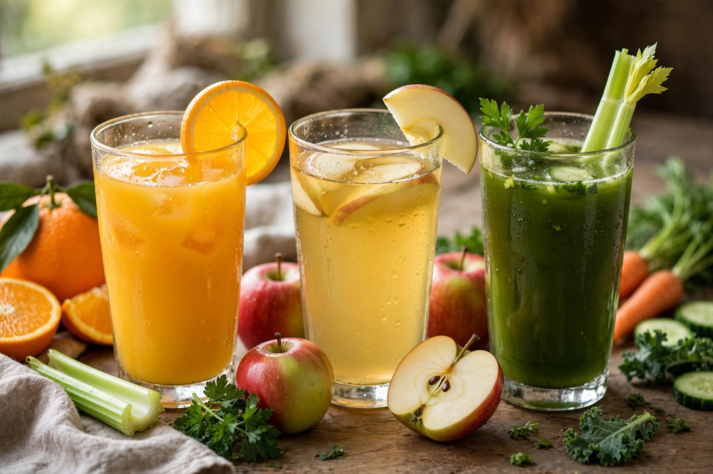

Juice

Type: Drink
Main ingredients: Extracted liquid of fruits or vegetables
Juice is a drink made from the extraction or pressing of the natural liquid contained in fruit and vegetables. It can also refer to liquids flavoured with concentrate or other biological food sources. Juice is commonly consumed as a beverage or used as an ingredient or flavouring in foods and other beverages, such as smoothies.
Preparation and types
Juice emerges as a popular beverage choice after the development of pasteurisation methods enabled its preservation without fermentation. Commercially, fruit juice is produced by crushing, pressing, or centrifuging fruit; products are labelled as "100% juice" (directly pressed or reconstituted from concentrate), "nectar" (juice diluted with water and sugar), or "juice drink" (containing a smaller proportion of juice). Orange juice is the most widely traded, followed by apple, grape and pineapple juices. Vegetable juices, such as tomato and carrot juice, are usually served savoury or salted.
Health considerations
Juices contain most of the sugars and many of the vitamins of the source fruit — citrus juice was historically important against scurvy — but little of its fibre, and their free sugars have led public-health bodies to class fruit juice with sugary drinks for dietary guidance. Freshly squeezed juice spoils quickly and is usually pasteurised or high-pressure processed for retail sale.
Terminology
In several countries the word "juice" is legally reserved for 100% fruit or vegetable juice; in British English "squash" denotes a concentrated flavoured syrup diluted with water, and in Australian English "juice" may refer to any sweetened fruit drink. The term is also used figuratively for liquid extracts of meats and for electrical current in slang.